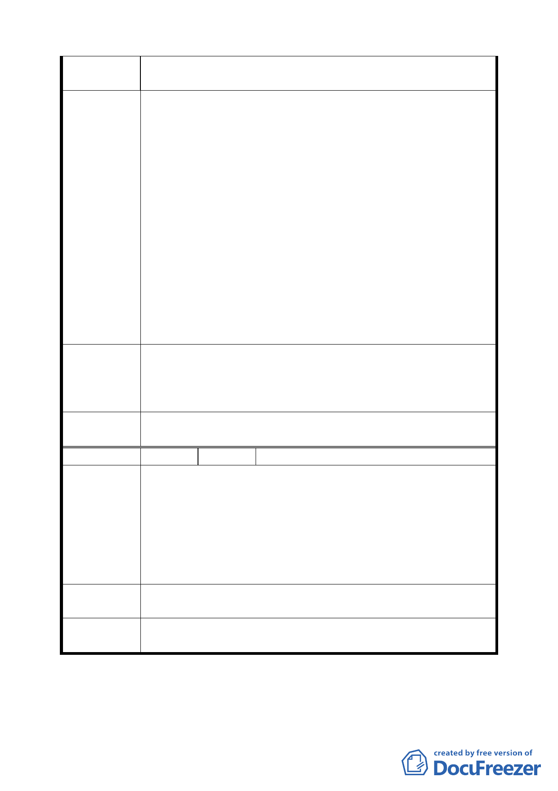

唭哩案段 218-7、218-102 地號同列為該五層建物使用之
土地範圍。
懇請將「榮一」案不列入「受臺北市山坡地開發建築要點管
制地區」。
一、所以使用法定建築語之「建築基地」應較具公信力。且
符合受益者回饋之公平原則。
二、綜合以上「榮一」案「相關規定及說明」欄，請准予修
建議辦法
改如後：「本社區回饋變更範圍基地內百分之三十土地
（或鄰近等值土地或換算等值樓地板、停車空間、或等
值代金）作為……..」。
請體恤民等數十年所承受損失與傷害。准予" 免回饋 "。若
前項所請，無法如民等所願，也請以回饋百分之十五為限。
讓本社區提高更新意願。鑑於上情，所以 71 府工二字第 36771
號公告圖，並未將該東端三角型土地納入，懇請 鈞委員會
將該部分刪除，以符建築法令 。
94.5.26 專案小組第十三次審查會議結論：同意陳情人與發展
專 案 小 組 局協商結果，並應加註「一次回饋，除整體開發範圍外，可
結 論 單獨建築」及「478-1 地號土地應待地上物他日改建時，要求
其留設及回饋」、「469 地號土地不必併入整體開發」。
委員會議
決議
同意依專案小組審查結論辦理。
編 號 5 陳情人 高智明 94.08.17
有關「榮一」案範圍內東端迴車道（9 平方公尺*9 平方公尺）
一、若遵照「一次完成土地回饋給市府」之規定，將無法避
開本社區內列入後期改建之 460 及 459 地號土地，在未
陳情理由
請領建照前，原規劃迴車道內地上圍牆、樓梯等必先遭
拆除，致該房地無法使用之缺失，懇請准予將該處之迴
車道（9 平方公尺*9 平方公尺）往東移 1.5 公尺。
二、東移後之回饋面積並未減少。
建議辦法
請准予將該處之迴車道（9 平方公尺*9 平方公尺）往東移 1.5
公尺。
委員會議
決議
同意陳情人建議。
臨時提案
第 四七 頁，共 49 頁